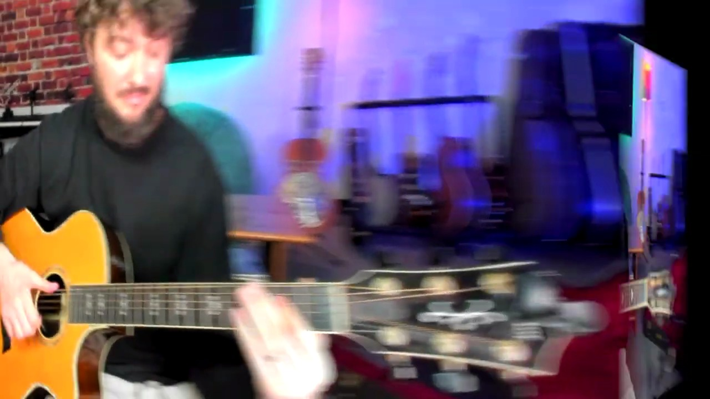
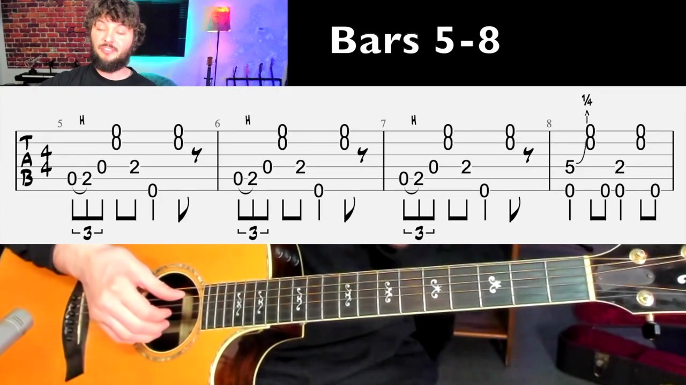

Key Moments





Summary & Script
Goin Down South (RL Burnside, Black Keys) Guitar Lesson with tabs
Source: https://www.youtube.com/watch?v=wAAPcsR0waU
Video ID: wAAPcsR0waU
Overview
The lesson teaches the hill‑country blues riff from “Going Down South” (R.L. Burnside / The Black Keys). The instructor explains the style’s groove‑oriented, riff‑based nature, breaks the eight‑bar pattern into two sections, and demonstrates two right‑hand techniques: a traditional finger‑pop and a back‑hand strum with a thumb slap. By the end you should be able to play the full loop at tempo and understand how to add percussive groove.
Topics Covered
- Hill‑country blues characteristics – Emphasizes repetitive riffs, minimal chord changes, and a strong groove.
- Riff structure – First four bars (8‑beat pattern) followed by a second three‑bar riff; the full song loops these eight bars.
- Detailed tab walk‑through – Shows each note (e.g., D‑string 5th fret, open high E, tiny quarter‑step bend) and timing (1‑2‑3‑4, with the fourth bar extended to six beats).
- Right‑hand approach #1: Finger pops – Thumb‑index pluck the low strings, then “pop” the high E and B strings with two fingers; emphasizes short, muted pops using the left hand to silence the strings quickly.
- Right‑hand approach #2: Back‑hand strum + thumb slap – Rotate the wrist to strike the top two strings with the back of the hand while the thumb hits the low E, creating a percussive click together with the note attack.
- Technique comparison – The back‑hand method adds extra rhythmic feel and is useful beyond this song; the finger‑pop method is simpler for beginners.
- Practice tips – Start with the finger‑pop version, then add the back‑hand strum, finally combine both; keep the wrist rotation small (key‑turn motion) and avoid excessive force on the slap.
- Metronome play‑through – Slow‑tempo run‑through of the full eight‑bar loop in both styles to practice timing and groove.
Key Takeaways
- Hill‑country blues relies on repetitive, groove‑centric riffs rather than chord changes.
- The main riff is eight bars: four bars with a 6‑beat fourth measure, then a three‑bar secondary riff.
- Small quarter‑step bends give the riff its bluesy flavor.
- Right‑hand technique #1 uses quick finger pops; mute notes with the left hand for a tight sound.
- Technique #2 adds a back‑hand strum and thumb slap, delivering a percussive groove useful in many styles.
- Practice slowly with a metronome, mastering each hand’s motion before combining them.
- The wrist motion for the back‑hand strum is a rotary “key‑turn” movement, not a large arm swing.
Notable Quotes
- “Hill country blues is really more riff‑based or groove‑based – they won’t change the chords as much.”
- “That tiny quarter‑step bend… just to give it that blues bend.”
- “The back‑hand strum … gives it a little more rhythm, a little more groove – that’s a big concept for hill‑country style blues.”
- “Your wrist is basically staying put; it’s a rotational motion, like opening a key at a lock.”
Podcast Script
JORDAN: Hey everyone, welcome back to the show! I'm Jordan, your detail‑oriented host, and with me is the ever‑curious Mike.
MIKE: What’s up, folks! Today we’re diving into that hill‑country blues riff that’s been blowing up on YouTube—specifically the one from the “Going Down South” tutorial.
JORDAN: The video breaks down the groove as a two‑part, eight‑bar pattern that repeats over and over. It’s fundamentally riff‑based, meaning the chord changes are minimal, which is perfect for building hand independence.
MIKE: Right, and that repetition is actually the hallmark of hill‑country blues—it's all about that hypnotic groove rather than flashy chord progressions. Listeners, think about how that could shape a jam session.
JORDAN: The instructor starts with the first four bars, counting three measures to four beats and the fourth measure to six beats. He emphasizes a tiny quarter‑step bend on the D string’s fifth fret to add that bluesy flavor.
MIKE: That bend is subtle but essential; it gives the riff that “wailing” character without sounding like a full‑on whammy bar dive. It’s a great tip for players who want nuance without overcomplicating.
JORDAN: He also demonstrates a thumb‑index “pinch” on the low E and D strings, then pops the high E and B strings in between. The rhythm is laid out as “one‑two‑three‑four” for each beat, with the fourth bar getting a double‑hit on the fifth fret.
MIKE: I love that visual—thumb and index doing a steady pulse while the other fingers add those percussive pops. It kind of feels like a drum kit on the guitar, which is why it grooves so well.
JORDAN: After the first half, he moves to the second riff, which repeats three times before returning to the opening pattern. The right hand here uses simple two‑finger pops, but he also offers a one‑finger alternative for those with limited finger independence.
MIKE: That’s a smart adaptation. Not everyone can juggle two fingers cleanly, so giving a solo‑finger option widens the audience. Plus, the repetitive nature makes it easier to lock into that pocket.
JORDAN: The “alternate” right‑hand technique is where things get interesting—a backhand strum with a rotation motion, hitting the low string with the thumb simultaneously. This adds a percussive click to the groove.
MIKE: Exactly, it’s like adding a snare hit on top of the strum. That extra click makes the riff feel more layered, especially in a live band setting where you need that extra drive.
JORDAN: He cautions that the backhand motion should come from the wrist rotation, not the whole arm—think of it as opening a key lock rather than swinging a hammer. Keeping the wrist stable preserves the tone and speed.
MIKE: That imagery really helps. If you picture unlocking a door, you avoid the excess motion that can muddy the attack. Listeners, try practicing that rotation slowly with a metronome at 60 BPM.
JORDAN: Speaking of tempo, the video ends with a slow play‑through of all eight bars, first with the standard pop technique, then with the backhand strum. That side‑by‑side comparison highlights the tonal difference.
MIKE: And it shows that you don’t have to choose one over the other—you can blend both approaches for a dynamic performance. Imagine switching mid‑solo to keep the audience on their toes.
JORDAN: To wrap up, the key takeaways are: master the basic eight‑bar riff, experiment with both right‑hand styles, and focus on wrist rotation for the backhand strum. Consistent practice will make the groove feel natural.
MIKE: And don’t forget to listen to different versions—from R.L. Burnside to The Black Keys—to hear how each artist puts their own spin on the same foundation. Thanks for tuning in, everyone!
JORDAN: That’s it for today’s deep dive into hill‑country blues technique. Keep those strings humming and stay analytical.
MIKE: Keep it curious, stay groovy, and we’ll catch you on the next episode. Peace!